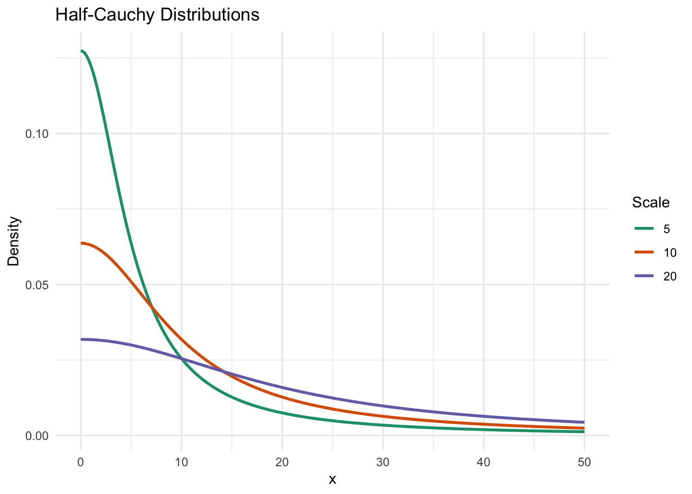
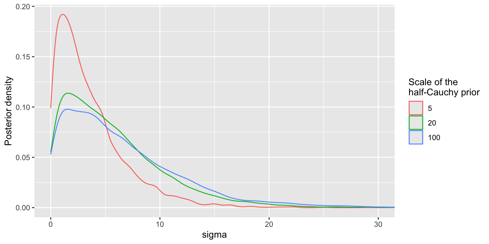
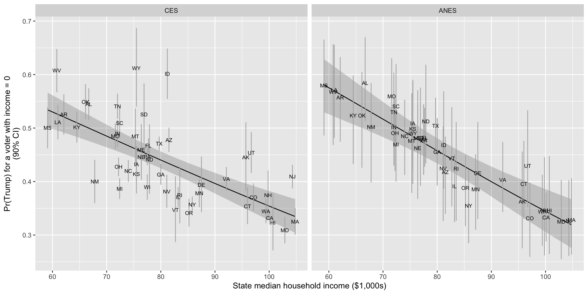

Complete solutions open Friday, October 30 at 12:00 PM
Exercise 1 Simulate and Recover; Ordered Logit
One important way to test and develop your understandings of statistical models and quantities of interest is to simulate a fake data set with known true quantity of interest (e.g., coefficients or first difference) and then recover that quantity of interest through your estimation procedure.
Do this for the ordered logit model in the notes. As your quantity of interest, use \(\Pr(y \geq 3)\) when income equals 1.5 and x2 equals "Label 1".
First, simulate a fake data set with known cutpoints, coefficients, and quantity of interest. The code below handles this. Notice that the linear predictor eta has no intercept. The cutpoints alpha take its place.
Second, use MASS::polr() to fit an ordered logit model to the fake data. Are the true cutpoints and coefficients inside their 95% confidence intervals? (polr() calls the cutpoints “Intercepts” and labels them 1|2, 2|3, and 3|4.)
Third, use predictions() to recover the true quantity of interest. Is the true value inside the 95% CI?
Fourth, adapt the code to compute the true first difference in \(\Pr(y \geq 3)\) as income moves from −1.5 to 1.5 (with x2 equal to "Label 1"). Then recover it with comparisons().
Fifth, refit the model with brm(family = cumulative("logit")). Recover the cutpoints, the coefficients, and the first difference. Compare with polr() and the truth.
# --- simulate a fake data set ---# set seed for reproducibilityset.seed(1234)# set sample sizen <-10000# needs to be large enough so that CI isn't super wide# create explanatory variables## numeric variable; six brackets, like income in the anes dataincome <-sample(c(-2.5, -1.5, -0.5, 0.5, 1.5, 2.5), size = n, replace =TRUE)## qualitative variablex2 <-sample(c("Label 1", "Label 2"),size = n,replace =TRUE,prob =c(0.75, 0.25)) # about 75% will be "Label 1"# create cutpoints and coefficientsalpha <-c(-1, 0.5, 2) # J - 1 = 3 cutpoints, so J = 4 categoriesb1 <-0.4b2 <-1# linear predictor; no intercept!eta <- b1*income + b2*(x2 =="Label 2")# cumulative probabilities Pr(y <= j), j = 1, 2, 3cp1 <-plogis(alpha[1] - eta)cp2 <-plogis(alpha[2] - eta)cp3 <-plogis(alpha[3] - eta)# category probabilities Pr(y = j), j = 1, 2, 3, 4; one row per observationp <-cbind(cp1, cp2 - cp1, cp3 - cp2, 1- cp3)# simulate outcome for ordered logit model; one draw per observationy <-numeric(n)for (i in1:n) { y[i] <-sample(1:4, size =1, prob = p[i, ])}# combine into data frame; y must be an ordered factor for polr()data <-data.frame(y =factor(y, ordered =TRUE), income, x2)# truth: Pr(y >= 3) when income = 1.5 and x2 = "Label 1"eta_c <- b1*1.5# x2 = "Label 1", so the b2 term is zero1-plogis(alpha[2] - eta_c)
[1] 0.5249792
Hint 1
\(\Pr(y \geq 3)\) is the sum of the probabilities of categories 3 and 4.
fixef() labels the cutpoints Intercept[1], Intercept[2], and Intercept[3].
The same predictions() and comparisons() calls work on the brm() fit.
Complete solution
Part 1
The true value of \(\Pr(y \geq 3)\) is about 0.525. Notice that \(\Pr(y \geq 3) = 1 - \Pr(y \leq 2) = 1 - \operatorname{logit}^{-1}(\alpha_2 - \eta)\), so we only need the second cutpoint.
Part 2
# fit ordered logit modelfit <- MASS::polr(y ~ income + x2, data = data, Hess =TRUE)# estimates and 95% cis for the coefficients and the cutpointsest <-c(coef(fit), fit$zeta)se <-sqrt(diag(vcov(fit)))cbind(truth =c(b1, b2, alpha),estimate = est,lower = est -1.96*se,upper = est +1.96*se)
All five true values are inside their 95% confidence intervals. The true value of b2 (i.e., 1) is only barely inside its interval (about 0.84 to 1.01); across many simulated data sets, we’d expect the interval to miss the true value about 5% of the time.
Part 3
# recover Pr(y >= 3) when income = 1.5 and x2 = "Label 1"predictions(fit,newdata =datagrid(income =1.5, x2 ="Label 1"),hypothesis ="b3 + b4 = 0")
The estimate is about 0.526, and the 95% CI runs from about 0.512 to 0.540. The true value (about 0.525) is inside the interval, as it usually will be.
Part 4
# truth: fd in Pr(y >= 3) as income moves from -1.5 to 1.5; x2 = "Label 1"pr_hi <-1-plogis(alpha[2] - b1*1.5)pr_lo <-1-plogis(alpha[2] - b1*(-1.5))pr_hi - pr_lo
The true first difference is about 0.275. The estimate is about 0.280, and the 95% CI runs from about 0.266 to 0.295. The true value is inside the interval.
Part 5
# fit the same ordered logit with brm()fit_brm_ordered <-brm(y ~ income + x2,data = data,family =cumulative("logit"),backend ="cmdstanr",chains =4,cores =4,seed =1234)
# posterior means and 95% credible intervals, next to the truth and polr()cbind(truth =c(alpha, b1, b2),polr =c(fit$zeta, coef(fit)),fixef(fit_brm_ordered)[, c("Estimate", "Q2.5", "Q97.5")])
Posterior means match polr() to about 0.001. All five true values are inside the 95% credible intervals.
First difference: 0.28 (95% CI from 0.266 to 0.295). Truth (0.275) is inside.
Same {marginaleffects} code for both fits.
Exercise 2 Eight Schools
In my slides, I motivated hierarchical models with the “309 problem.” There’s a similar motivational problem called the “eight schools” problem. This example is worth studying carefully.
Read the pp. 119-124 of BDA3 on the eight schools problem.
Run the R code here. Note that the notation in my Stan model differs from BDA3.
In the model, \(\sigma\) captures the similarity of the treatment effects across school districts. I give this parameter a half-Cauchy prior with a scale of 20. (See the note below.) How does changing the scale of the half-Cauchy prior in the Stan model affect the estimates of \(\sigma\)?
Try setting the scale of the half-Cauchy to 5 instead of 20.
Try setting it to 100. Hint: you can use sigma_draws <- spread_draws(fit, sigma) to get a convenient data frame of posterior simulations of \(\sigma\).
Make sure you understand the basic eight schools example and can discuss it in parallel to the 309 example in the slides.
So what’s a half-Cauchy?
A Cauchy distribution is a location-scale t distribution with one degree of freedom. The half-Cauchy is centered at zero and folded over, so that it is just the rightward half. It has only a scale parameter that corresponds to something like the “expected” value of \(\sigma\).1 The expected value of the half-Cauchy does not exist, but the median equals the scale parameter. This is a useful weakly informative prior for variance parameters that capture similarity in hierarchical models.
In this case, the student-level SAT scores range from 200 to 800, and the treatment effects are somewhere around a 10-point improvement. In the Stan model, \(\sigma\) is the SD around that 10-point effect across schools. \(\sigma = 20\) would be huge variation; \(\sigma = 3\) or \(\sigma = 5\) seem “about right.” So I think of a half-Cauchy with a scale of 20 as a “weakly informative” prior that only rules out absurdly large values of \(\sigma\) and gently encourages smaller rather than larger values.

Complete solution
Part 3
# load packageslibrary(cmdstanr)library(tidybayes)# eight-schools data; from my 2nd ed. of BDA on p. 140est <-c(28, 8, -3, 7, -1, 1, 18, 12)se_est <-c(15, 10, 16, 11, 9, 11, 10, 18)J <-length(est)# the stan model from the script (centered), with the prior scale as datastan_code_centered <-"data { int<lower=1> J; vector[J] est; vector<lower=0>[J] se_est; real<lower=0> scale; // scale of the half-cauchy prior on sigma}parameters { real mu; real<lower=0> sigma; vector[J] theta;}model { mu ~ normal(0, 1000); sigma ~ cauchy(0, scale); theta ~ normal(mu, sigma); est ~ normal(theta, se_est);}"
model_centered <-cmdstan_model(write_stan_file(stan_code_centered))fit_centered <- model_centered$sample(data =list(J = J, est = est, se_est = se_est, scale =20),seed =123,chains =4,parallel_chains =4,iter_warmup =2000,iter_sampling =2000)# pull the draws and diagnostics into memory (cmdstanr keeps them in temp files)centered_summary <- fit_centered$summary(variables =c("mu", "sigma"))centered_diagnostics <- fit_centered$diagnostic_summary()
Divergent transitions in every chain and low E-BFMI. The ESS for sigma is small.
A known problem with this model: when sigma is small, the thetas must sit close to mu, and the sampler can’t move through that region.
The fix is the non-centered parameterization: sample standardized effects z and set theta = mu + sigma * z. Same model, easier posterior.
Part 4
# non-centered version: same model, theta = mu + sigma * zstan_code_noncentered <-"data { int<lower=1> J; vector[J] est; vector<lower=0>[J] se_est; real<lower=0> scale; // scale of the half-cauchy prior on sigma}parameters { real mu; real<lower=0> sigma; vector[J] z; // standardized school effects}transformed parameters { vector[J] theta = mu + sigma * z;}model { mu ~ normal(0, 1000); sigma ~ cauchy(0, scale); z ~ std_normal(); // implies theta ~ normal(mu, sigma) est ~ normal(theta, se_est);}"
model_noncentered <-cmdstan_model(write_stan_file(stan_code_noncentered))# fit the model for one prior scale; return the draws of sigma and the divergencesfit_scale <-function(scale) { fit <- model_noncentered$sample(data =list(J = J, est = est, se_est = se_est, scale = scale),seed =123,chains =4,parallel_chains =4,iter_warmup =2000,iter_sampling =2000,adapt_delta =0.95 )tibble(sigma_draws =list(spread_draws(fit, sigma)),divergent =sum(fit$diagnostic_summary()$num_divergent))}# one row per prior scalescale_fits <-tibble(scale =c(5, 20, 100)) |>mutate(fit =map(scale, fit_scale)) |>unnest(fit)
# posterior of sigma for each prior scalescale_fits |>unnest(sigma_draws) |>summarize(divergent =first(divergent),median =median(sigma),q05 =quantile(sigma, 0.05),q95 =quantile(sigma, 0.95),.by = scale)
# posterior densities of sigmascale_fits |>unnest(sigma_draws) |>ggplot(aes(x = sigma, color =factor(scale))) +geom_density() +coord_cartesian(xlim =c(0, 30)) +labs(x ="sigma", y ="Posterior density", color ="Scale of the\nhalf-Cauchy prior")

Larger scale, larger sigma: the posterior median and 95th percentile both rise as the scale goes from 5 to 100.
Eight schools say little about sigma, so the prior matters.
Scale 5 pulls sigma toward zero and the school effects toward mu. Scale 100 lets them spread out.
Exercise 3 Feelings Toward Donald Trump
The dataset here from the 2016 ANES has data on feeling thermometer ratings of Donald Trump and a social_group variable that indicates a race-sex-degree triplet.
Now fit one hierarchical model to all 50 states. Each state gets its own intercept, and the 50 intercepts come from a normal distribution.
This is the varying-intercept model behind Figure 3 of Gelman et al. (2007, p. 355) [pdf].
income varies across voters within a state. rs_state_median_income varies only across states: state median household income, rescaled to mean 0 and SD 0.5 across the 50 states.
Same CES data as Part 4. The code below adds rs_state_median_income.
Rows: 48582 Columns: 5
── Column specification ────────────────────────────────────────────────────────
Delimiter: ","
chr (2): state_name, state_abbr
dbl (3): state_median_income, income, vote_rep
ℹ Use `spec()` to retrieve the full column specification for this data.
ℹ Specify the column types or set `show_col_types = FALSE` to quiet this message.
# one row per state; rescale state income to mean 0 and sd 0.5 across the 50 statesstates <- ces |>distinct(state_name, state_abbr, state_median_income) |>mutate(rs_state_median_income = (state_median_income -mean(state_median_income)) / (2*sd(state_median_income)))# add rescaled state income to the votersces <- ces |>left_join(select(states, state_name, rs_state_median_income), by ="state_name")
Use brm() to fit the logit vote_rep ~ income + rs_state_median_income + (1 | state_name). Use family = bernoulli, backend = "cmdstanr", iter = 10000, and warmup = 2000. Check R-hat and the ESS.
Use predictions() to compute Pr(Trump), with a 90% CI, for a voter in the middle income category (income = 0) in each state. Plot these 50 estimates and their CIs against state_median_income, labeled with the state abbreviations.
Add a line for a typical state (i.e., a state whose intercept is exactly what state income predicts). Use predictions() with re_formula = NA over a range of state incomes.
Interpret the coefficients on income and rs_state_median_income. Where does each show up in your plot? What is the vertical distance between a state’s point and the line?
In Part 4, the effect of income differed across states (e.g., about 0.15 in Mississippi and about −0.08 in Oregon). Does the effect of income differ across states in this model? Why or why not?
Gelman et al. (2007) describe a paradox: richer voters lean Republican, but richer states lean Democratic. Does this model show the same paradox in 2024?
Hint 1
Each state needs its own rs_state_median_income in the grid.
grid <- mutate(states, income = 0) gives one row per state.
Family: bernoulli
Links: mu = logit
Formula: vote_rep ~ income + rs_state_median_income + (1 | state_name)
Data: ces (Number of observations: 48582)
Draws: 4 chains, each with iter = 10000; warmup = 2000; thin = 1;
total post-warmup draws = 32000
Multilevel Hyperparameters:
~state_name (Number of levels: 50)
Estimate Est.Error l-95% CI u-95% CI Rhat Bulk_ESS Tail_ESS
sd(Intercept) 0.26 0.03 0.20 0.33 1.00 4993 9395
Regression Coefficients:
Estimate Est.Error l-95% CI u-95% CI Rhat Bulk_ESS
Intercept -0.26 0.04 -0.33 -0.18 1.00 3211
income 0.01 0.01 -0.01 0.03 1.00 38723
rs_state_median_income -0.45 0.08 -0.60 -0.29 1.00 3305
Tail_ESS
Intercept 6158
income 25269
rs_state_median_income 7113
Draws were sampled using sample(hmc). For each parameter, Bulk_ESS
and Tail_ESS are effective sample size measures, and Rhat is the potential
scale reduction factor on split chains (at convergence, Rhat = 1).
R-hat 1.00 everywhere. Smallest bulk ESS above 2,000. Passes the notes’ rule of thumb.
Part 2
# one row per state; a voter in the middle income categorygrid <-mutate(states, income =0)# pr(trump) with a 90% ci in each statep_ces <-predictions(fit_ces, newdata = grid, conf_level =0.9) |>as_tibble()
Plot under Part 3, with the line.
Part 3
# state incomes from the poorest state to the richest, rescaled like rs_state_median_incomeline_grid <-tibble(state_median_income =seq(min(states$state_median_income),max(states$state_median_income),length.out =50)) |>mutate(rs_state_median_income = (state_median_income -mean(states$state_median_income)) / (2*sd(states$state_median_income)),income =0)# a typical state: every state's deviation set to zeroline_ces <-predictions(fit_ces, newdata = line_grid, re_formula =NA, conf_level =0.9) |>as_tibble()
ggplot(p_ces, aes(x = state_median_income, y = estimate)) +geom_ribbon(data = line_ces, aes(ymin = conf.low, ymax = conf.high), alpha =0.2) +geom_line(data = line_ces) +geom_errorbar(aes(ymin = conf.low, ymax = conf.high), width =0, color ="grey70") +geom_text(aes(label = state_abbr), size =3) +labs(x ="State median household income ($1,000s)",y ="Pr(Trump) for a voter with income = 0\n(90% CI)")
Part 4
# the two coefficients, with 90% intervalsposterior_summary(fit_ces,variable =c("b_income", "b_rs_state_median_income"),probs =c(0.05, 0.95)) |>round(3)
# each state's distance from the line: its estimate minus a typical state's at the same state incometypical_ces <-predictions(fit_ces, newdata = grid, re_formula =NA) |>as_tibble() |>select(state_abbr, line = estimate)distance_ces <- p_ces |>select(state_abbr, estimate) |>left_join(typical_ces, by ="state_abbr") |>mutate(distance = estimate - line) |>arrange(desc(distance))head(distance_ces, 3)
# A tibble: 3 × 4
state_abbr estimate line distance
<chr> <dbl> <dbl> <dbl>
1 ID 0.602 0.435 0.167
2 WY 0.612 0.460 0.152
3 UT 0.454 0.368 0.0861
tail(distance_ces, 3)
# A tibble: 3 × 4
state_abbr estimate line distance
<chr> <dbl> <dbl> <dbl>
1 VT 0.347 0.428 -0.0810
2 MI 0.387 0.474 -0.0875
3 NM 0.400 0.495 -0.0948
income: 0.011 (90% interval from −0.003 to 0.025). Voters in the same state. By the divide-by-4 rule, at most about 0.003 per income category. Not in the plot (every point holds income at 0).
rs_state_median_income: −0.446 (from −0.575 to −0.316). States. The slope of the line. One unit is two SDs of state median income (about $24,800). The line falls from 0.534 (Mississippi, $59,100) to 0.335 (Massachusetts, $104,800).
Distance from the line: the state’s deviation from the varying-intercept model (on the probability scale), i.e., what state income doesn’t explain. Furthest above: Idaho (0.17), Wyoming (0.15), Utah (0.09). Furthest below: New Mexico (−0.09), Michigan (−0.09), Vermont (−0.08).
Part 5
# change in pr(trump) as income moves from -1 to 1 in each statecomparisons(fit_ces,variables =list(income =c(-1, 1)),newdata = grid,conf_level =0.9) |>as_tibble() |>summarize(smallest =min(estimate), largest =max(estimate))
# A tibble: 1 × 2
smallest largest
<dbl> <dbl>
1 0.00484 0.00566
No. About 0.005 in every state (0.0048 to 0.0057).
Every state has the same coefficient on income. Only the intercepts vary.
The small differences come from the different baseline probabilities.
To let the effect differ across states: a varying slope, (1 + income | state_name).
Part 6
No. The paradox needs both halves.
Between states: still there. Richer states lean Democratic (−0.446).
Within states: gone. Richer voters are no more likely to vote for Trump (0.011; the 90% interval includes zero).
But Part 4 found larger effects in poorer states. A varying slope can check whether the average of about zero hides positive slopes in poor states.
Exercise 5 Red State, Blue State: Part 7
Part 5 fit the separate logits to the ANES: wide CIs, extreme estimates from tiny states, and no estimates at all for Wyoming (1 respondent) or Vermont (2).
Now fit the hierarchical model from Exercise 4 to the ANES.
# load data; add rescaled state income from part 6anes <-read_csv("https://pos5747.github.io/files/red-state-part5.csv") |>left_join(select(states, state_name, rs_state_median_income), by ="state_name")
Rows: 2445 Columns: 5
── Column specification ────────────────────────────────────────────────────────
Delimiter: ","
chr (2): state_name, state_abbr
dbl (3): state_median_income, income, vote_rep
ℹ Use `spec()` to retrieve the full column specification for this data.
ℹ Specify the column types or set `show_col_types = FALSE` to quiet this message.
Repeat parts 1–3 of Exercise 4 with the ANES data.
Plot the ANES estimates next to the CES estimates from Exercise 4 (i.e., two panels with the same axes, one for each survey).
Where do the ANES estimates differ from the CES estimates? Compare the coefficients on income and rs_state_median_income. Compare the widths of the CIs.
Find Wyoming and Vermont. Where do their estimates come from? How do they compare with the CES?
Hint
bind_rows(list(CES = p_ces, ANES = p_anes), .id = "survey") stacks the two sets of predictions and adds a survey column.
Same for the two lines. Then facet_wrap(vars(survey)).
Family: bernoulli
Links: mu = logit
Formula: vote_rep ~ income + rs_state_median_income + (1 | state_name)
Data: anes (Number of observations: 2445)
Draws: 4 chains, each with iter = 10000; warmup = 2000; thin = 1;
total post-warmup draws = 32000
Multilevel Hyperparameters:
~state_name (Number of levels: 50)
Estimate Est.Error l-95% CI u-95% CI Rhat Bulk_ESS Tail_ESS
sd(Intercept) 0.22 0.07 0.07 0.37 1.00 9375 8564
Regression Coefficients:
Estimate Est.Error l-95% CI u-95% CI Rhat Bulk_ESS
Intercept -0.19 0.06 -0.31 -0.08 1.00 33305
income -0.10 0.04 -0.17 -0.03 1.00 74584
rs_state_median_income -0.59 0.12 -0.82 -0.34 1.00 36976
Tail_ESS
Intercept 25009
income 22274
rs_state_median_income 26293
Draws were sampled using sample(hmc). For each parameter, Bulk_ESS
and Tail_ESS are effective sample size measures, and Rhat is the potential
scale reduction factor on split chains (at convergence, Rhat = 1).
# pr(trump) with a 90% ci in each state, and the line; same grids as part 6p_anes <-predictions(fit_anes, newdata = grid, conf_level =0.9) |>as_tibble()line_anes <-predictions(fit_anes, newdata = line_grid, re_formula =NA, conf_level =0.9) |>as_tibble()
Part 2
# stack the two surveysp_both <-bind_rows(list(CES = p_ces, ANES = p_anes), .id ="survey") |>mutate(survey =factor(survey, levels =c("CES", "ANES")))line_both <-bind_rows(list(CES = line_ces, ANES = line_anes), .id ="survey") |>mutate(survey =factor(survey, levels =c("CES", "ANES")))ggplot(p_both, aes(x = state_median_income, y = estimate)) +geom_ribbon(data = line_both, aes(ymin = conf.low, ymax = conf.high), alpha =0.2) +geom_line(data = line_both) +geom_errorbar(aes(ymin = conf.low, ymax = conf.high), width =0, color ="grey70") +geom_text(aes(label = state_abbr), size =2.5) +facet_wrap(vars(survey)) +labs(x ="State median household income ($1,000s)",y ="Pr(Trump) for a voter with income = 0\n(90% CI)")

Part 3
# the two coefficients in each survey, with 90% intervalscoefs <-c("b_income", "b_rs_state_median_income")posterior_summary(fit_ces, variable = coefs, probs =c(0.05, 0.95)) |>round(3)
# median width of the 90% cistibble(survey =c("CES", "ANES"),median_width =c(median(p_ces$conf.high - p_ces$conf.low),median(p_anes$conf.high - p_anes$conf.low)))
# A tibble: 2 × 2
survey median_width
<chr> <dbl>
1 CES 0.0586
2 ANES 0.148
# states where the anes and ces differ the mostleft_join(select(p_anes, state_abbr, anes = estimate, conf.low, conf.high),select(p_ces, state_abbr, ces = estimate),by ="state_abbr") |>mutate(difference = anes - ces) |>arrange(desc(abs(difference))) |>head(6)
Within states, the surveys disagree. ANES income: −0.101 (from −0.160 to −0.042), so richer voters were less likely to vote for Trump. CES: 0.011. The intervals don’t overlap.
Between states, they agree. rs_state_median_income: −0.585 (ANES) and −0.446 (CES). Overlapping intervals.
ANES CIs about 2.5 times as wide (median 0.148 vs. 0.059).
ANES points sit close to the line. About 50 respondents per state, so each state’s intercept is pulled most of the way to what state income predicts. CES (about 1,000 per state): the points scatter.
Biggest differences in states the CES puts far from its line: Idaho and Wyoming (ANES about 0.13 and 0.12 lower), New Mexico and Vermont (about 0.10 higher).
Part 4
# respondents and trump supporters in each anes stateanes_counts <- anes |>summarize(n =n(), n_trump =sum(vote_rep), .by = state_abbr)# wyoming and vermontfilter(p_anes, state_abbr %in%c("WY", "VT")) |>select(state_abbr, estimate, conf.low, conf.high) |>left_join(anes_counts, by ="state_abbr") |>left_join(select(p_ces, state_abbr, ces = estimate), by ="state_abbr")
Wyoming: 1 respondent (Trump). Vermont: 2 (one each). No estimates in Part 5.
Now: Wyoming 0.490 (90% CI from 0.395 to 0.588), Vermont 0.443 (from 0.353 to 0.539).
Almost entirely from the line (state income and the other 49 states): 0.006 and 0.001 above it.
But state income doesn’t explain everything. CES: Wyoming 0.612, Vermont 0.347. Both just outside the ANES CIs.
Exercise 6 Ordered or Not? Gelpi and Paolino
March 2008 survey experiment on the war in Iraq (Gelpi; N = 1,000).
Each respondent read a short news story: successful military events in Iraq, unsuccessful events, or neither. Separately, a confident statement from President Bush (“no doubt … we will succeed”), a cautious statement, or neither.
Then: what do you think of a timetable for withdrawing all American troops from Iraq?
Paolino (2017): the answers are ordered. Ordered logit; the effects of the stories change linearly with approval of Bush.
Gelpi (2017): unordered. Multinomial logit, separately for each level of Bush approval.
Paolino, Philip. 2017. “Surprising Events and Surprising Opinions: The Importance of Attitude Strength and Source Credibility.” Journal of Conflict Resolution 61(8): 1795–1815.
Gelpi, Christopher. 2017. “The Surprising Robustness of Surprising Events.” Journal of Conflict Resolution 61(8): 1816–1834.
timetable: “What do you think about the policy of setting a timetable with a specific date for withdrawing all American troops from Iraq?” Strongly approve, somewhat approve, somewhat disapprove, or strongly disapprove.
bush_approval: approval of President Bush, from 0 (strongly disapprove) to 3 (strongly approve).
pos_events, neg_events: 1 if the story reported successful (or unsuccessful) military events. No one read both.
pos_bush, neg_bush: 1 if the story included the confident (or cautious) statement from Bush. No one read both.
The code below orders the answers from most anti-war (“strongly approve” of a timetable) to most pro-war (“strongly disapprove”), and makes an unordered copy with “somewhat approve” as the baseline (as in Gelpi 2017).
Fit Paolino’s ordered logit with MASS::polr(): timetable ~ (pos_events + neg_events + pos_bush + neg_bush) * bush_approval. (A simplified version of the model in Paolino’s appendix Table A26, without the party dummies.)
Fit Gelpi’s multinomial logit with nnet::multinom(): timetable_nominal ~ (pos_events + neg_events + pos_bush + neg_bush) * factor(bush_approval). (The same as Gelpi’s four separate models, one for each level of Bush approval.) How many parameters does each model have?
For each model, use comparisons() to compute the effect of positive events (pos_events from 0 to 1) on the probability of each of the four answers, at each level of Bush approval. Set the other three treatments to 0. Plot the effects with their 95% CIs, with one panel for each level of Bush approval and both models in each panel.
Among strong Bush disapprovers (bush_approval = 0), how do positive events change the four probabilities in the multinomial logit? Could the ordered logit produce this pattern? How strong is the evidence for it?
Compare the two models with AIC and BIC. Which does each prefer?
For part 4: under the ordered logit, \(\Pr(Y_i = 1) = \operatorname{logit}^{-1}(\alpha_1 - \eta_i)\) and \(\Pr(Y_i = 4) = 1 - \operatorname{logit}^{-1}(\alpha_3 - \eta_i)\). What happens to each as \(\eta_i\) increases? As \(\eta_i\) decreases?
Complete solution
Part 1
# paolino: ordered logit, each treatment interacted with bush approvalfit_ordered <- MASS::polr(timetable ~ (pos_events + neg_events + pos_bush + neg_bush) * bush_approval,data = gelpi_tt, Hess =TRUE)summary(fit_ordered)
# gelpi: multinomial logit, a separate set of effects for each level of bush approvalfit_multinomial <- nnet::multinom(timetable_nominal ~ (pos_events + neg_events + pos_bush + neg_bush) *factor(bush_approval),data = gelpi_tt, trace =FALSE)# number of parametersattr(logLik(fit_ordered), "df")
[1] 12
attr(logLik(fit_multinomial), "df")
[1] 60
Ordered logit: 12 (nine coefficients and three cutpoints).
Multinomial logit: 60 (3 equations × 5 coefficients × 4 levels of Bush approval).
Part 3
# no other story, each level of bush approvalgrid_ordered <-datagrid(model = fit_ordered, pos_events =0, neg_events =0,pos_bush =0, neg_bush =0, bush_approval =0:3)grid_multinomial <-datagrid(model = fit_multinomial, pos_events =0, neg_events =0,pos_bush =0, neg_bush =0, bush_approval =0:3)# effect of positive events on each probability# (the multinomial logit returns bush_approval as a factor, so make both numeric)c_ordered <-comparisons(fit_ordered, variables ="pos_events", newdata = grid_ordered) |>as_tibble() |>mutate(bush_approval =as.numeric(as.character(bush_approval)))c_multinomial <-comparisons(fit_multinomial, variables ="pos_events",newdata = grid_multinomial, type ="probs") |>as_tibble() |>mutate(bush_approval =as.numeric(as.character(bush_approval)))# both modelsc_both <-bind_rows(list(`Ordered logit`= c_ordered,`Multinomial logit`= c_multinomial), .id ="model")
ggplot(c_both, aes(x = estimate, xmin = conf.low, xmax = conf.high, y = group,color = model)) +geom_vline(xintercept =0, linetype ="dashed") +geom_pointrange(position =position_dodge(width =0.5), size =0.2) +facet_wrap(vars(bush_approval), nrow =1, labeller = label_both) +scale_y_discrete(limits =rev(levels(gelpi_tt$timetable))) +# scale order, top to bottomscale_x_continuous(breaks =c(-0.2, 0, 0.2)) +labs(x ="Effect of positive events on the probability (95% CI)",y =NULL,color =NULL) +theme(legend.position ="top")
Multinomial logit: Pr(somewhat approve) falls by 0.12 (95% CI from −0.23 to −0.005). Pr(strongly disapprove) rises by 0.07 (from 0.001 to 0.13). Pr(strongly approve) rises by 0.06 (from −0.05 to 0.17). Out of the middle, toward both ends.
The ordered logit can’t do this.
As \(\eta_i\) increases, \(\alpha_1 - \eta_i\) and \(\alpha_3 - \eta_i\) both decrease. \(\operatorname{logit}^{-1}\) is increasing, so \(\Pr(Y_i = 1)\) falls and \(\Pr(Y_i = 4)\) rises.
As \(\eta_i\) decreases, both reverse.
A treatment shifts \(\eta_i\) by the same amount for everyone at a level of Bush approval, so its effects on the two end categories have opposite signs (or are both zero).
Ordered logit here: −0.02 on “strongly approve” and 0.01 on “strongly disapprove.”
Weak evidence. The pattern depends on the rise in “strongly approve,” and that interval includes zero.